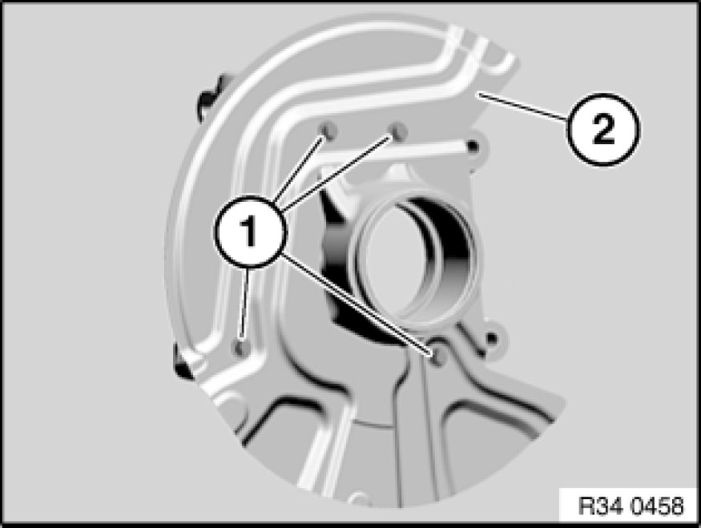

Removing and Installing/Replacing a Brake Carrier/Brake Guard Plate at Front
34 11 250 - Removing and installing / replacing a brake carrier / brake guard plate at front

Necessary preliminary tasks:
- Remove front swivel bearing Removing and Installing/Replacing Left or Right Swivel Bearing.

Release screws (1) and remove brake guard plate (2).
Installation:
Tightening torque 34 11 5AZ 34 11 Front Brake.